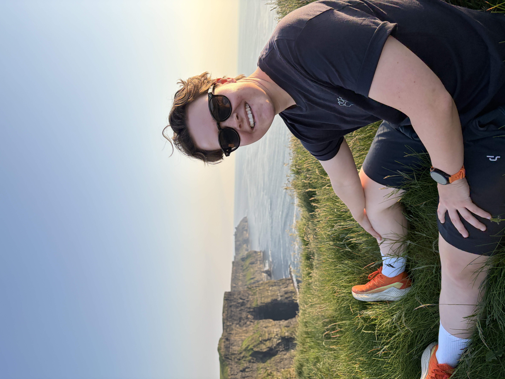
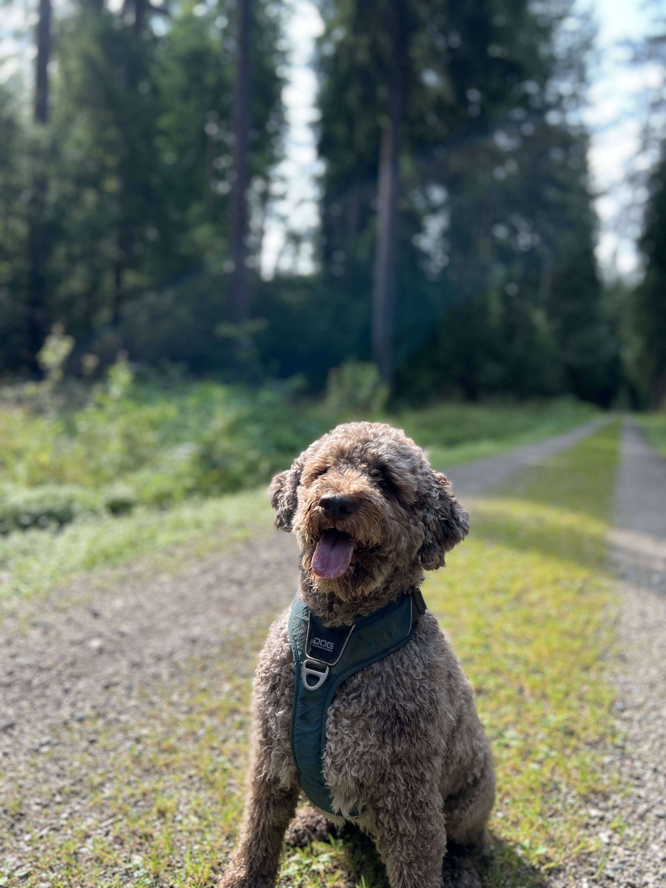
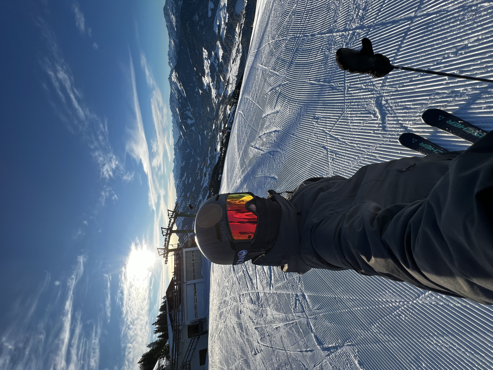
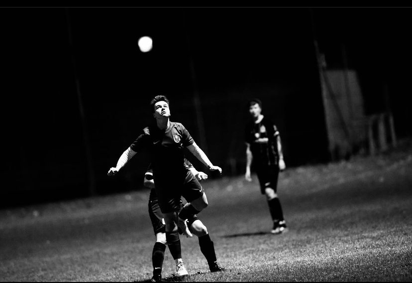
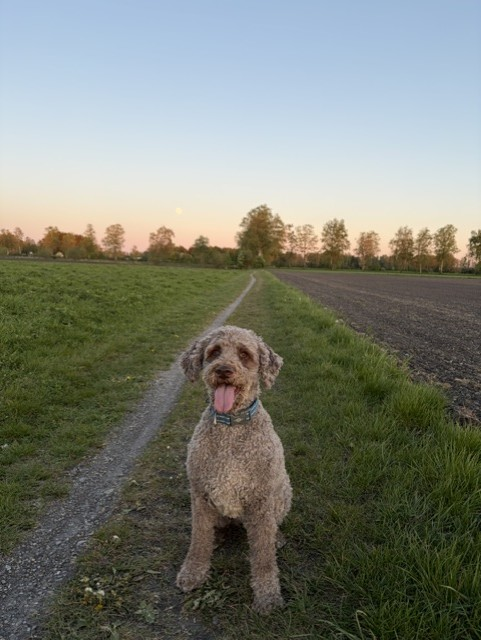

Wer ich bin?
Servus, ich bin Linda, 20 Jahre alt und mache seit 2 Jahren eine Ausbildung zur Kauffrau für Büromanagement. Ich bin ein offener, kommunikativer und fröhlicher Mensch, der immer für einen Spaß zu haben ist ☺️.

Emojis, die mich am Besten beschreiben:
☺️☀️😃😎🤪
Meine Interessen & Hobbys
- Fußball ⚽ – spielt eine sehr große Rolle in meinem Leben
- Bonnie 🐶
- Ski und Gravel Bike fahren, laufen gehen, Paddle, mit Freunden was unternehmen
Meine Hobbys in Bildern







Meine Abteilungen
Projekte aus meiner Ausbildung
Hier könnt ihr einen kleinen Einblick in eines meiner Projekte hören:
- Mini-Podcast
Meine Ausbildung
Start beim BR
Beginn der Ausbildung zur Kauffrau für Büromanagement.
Zwischenstationen
PDI, Marketing, Bayern 2 und weitere Abteilungen.
Aktueller Stand
ca. 85% meiner Ausbildung sind geschafft 🤩
Abschluss
Voraussichtlich im Februar
Mein Werdegang
Realschule, FOS, Ausbildung beim BR
Kontakt
So bin ich erreichbar:
E-Mail: linda.penski@br.de
Nummer: +49 89 590023508